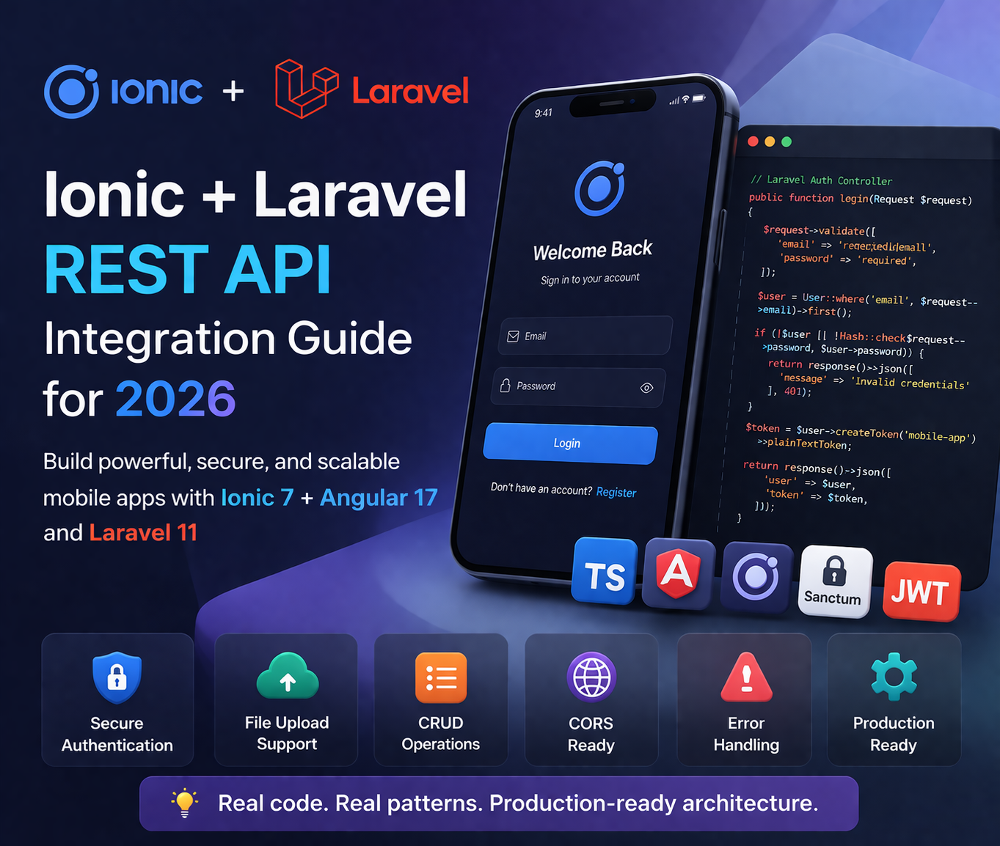

Ionic and Laravel are a natural stack combination. Ionic gives you a cross-platform mobile app; Laravel gives you a clean, well-structured backend API. Together they power some of the most reliable and cost-effective mobile app systems I've built for clients across India, the UK, and Australia.
This is a practical guide — real code, real patterns, and the specific gotchas I've hit (and fixed) across 15+ years of building this exact stack in production.
Step 1: Laravel API Setup
Install and Configure Laravel Sanctum (Recommended)
For most mobile apps, Laravel Sanctum with token-based auth is the cleanest approach. It's built into Laravel and handles mobile token issuance simply.
# Create new Laravel project
composer create-project laravel/laravel my-api
cd my-api
# Install Sanctum (included in Laravel 11 by default)
php artisan install:api
# Run migrations
php artisan migrateConfigure CORS for Mobile Development
This is the most common first blocker developers hit. Your Ionic app (running on a device or simulator) will make requests from a different origin than your Laravel server. Configure CORS correctly from the start.
// config/cors.php
return [
'paths' => ['api/*'],
'allowed_methods' => ['*'],
'allowed_origins' => ['*'], // Restrict to your domain in production
'allowed_origins_patterns' => [],
'allowed_headers' => ['*'],
'exposed_headers' => [],
'max_age' => 0,
'supports_credentials' => false,
];'allowed_origins' => ['*'] with your actual domains: ['https://yourdomain.com', 'capacitor://localhost', 'http://localhost']. Capacitor iOS uses capacitor://localhost as the WebView origin.
Auth Controller
// app/Http/Controllers/Api/AuthController.php
namespace App\Http\Controllers\Api;
use App\Http\Controllers\Controller;
use App\Models\User;
use Illuminate\Http\Request;
use Illuminate\Support\Facades\Hash;
class AuthController extends Controller
{
public function register(Request $request)
{
$request->validate([
'name' => 'required|string|max:255',
'email' => 'required|string|email|unique:users',
'password' => 'required|string|min:8|confirmed',
]);
$user = User::create([
'name' => $request->name,
'email' => $request->email,
'password' => Hash::make($request->password),
]);
$token = $user->createToken('mobile-app')->plainTextToken;
return response()->json([
'user' => $user,
'token' => $token,
], 201);
}
public function login(Request $request)
{
$request->validate([
'email' => 'required|email',
'password' => 'required',
]);
$user = User::where('email', $request->email)->first();
if (!$user || !Hash::check($request->password, $user->password)) {
return response()->json([
'message' => 'Invalid credentials'
], 401);
}
// Revoke old tokens on login (optional — good for security)
$user->tokens()->delete();
$token = $user->createToken('mobile-app')->plainTextToken;
return response()->json([
'user' => $user,
'token' => $token,
]);
}
public function logout(Request $request)
{
$request->user()->currentAccessToken()->delete();
return response()->json(['message' => 'Logged out successfully']);
}
}API Routes
// routes/api.php
use App\Http\Controllers\Api\AuthController;
use App\Http\Controllers\Api\PostController;
Route::post('/register', [AuthController::class, 'register']);
Route::post('/login', [AuthController::class, 'login']);
Route::middleware('auth:sanctum')->group(function () {
Route::post('/logout', [AuthController::class, 'logout']);
Route::apiResource('posts', PostController::class);
});Step 2: Ionic Angular — API Service
Create the API Service
Centralise all HTTP calls in a dedicated service. Never call HttpClient directly from components — it makes your code hard to test and maintain.
// src/app/core/services/api.service.ts
import { Injectable } from '@angular/core';
import { HttpClient, HttpHeaders } from '@angular/common/http';
import { Observable } from 'rxjs';
import { environment } from '../../../environments/environment';
@Injectable({ providedIn: 'root' })
export class ApiService {
private baseUrl = environment.apiUrl; // e.g. https://api.yourdomain.com/api
constructor(private http: HttpClient) {}
get<T>(endpoint: string): Observable<T> {
return this.http.get<T>(`${this.baseUrl}/${endpoint}`);
}
post<T>(endpoint: string, body: any): Observable<T> {
return this.http.post<T>(`${this.baseUrl}/${endpoint}`, body);
}
put<T>(endpoint: string, body: any): Observable<T> {
return this.http.put<T>(`${this.baseUrl}/${endpoint}`, body);
}
delete<T>(endpoint: string): Observable<T> {
return this.http.delete<T>(`${this.baseUrl}/${endpoint}`);
}
}JWT Interceptor — Attach Token to Every Request
An HTTP interceptor automatically injects the Bearer token into every outgoing request, so you never have to add it manually in each service call.
// src/app/core/interceptors/auth.interceptor.ts
import { HttpInterceptorFn, HttpRequest, HttpHandlerFn } from '@angular/common/http';
import { inject } from '@angular/core';
import { StorageService } from '../services/storage.service';
import { from, switchMap } from 'rxjs';
export const authInterceptor: HttpInterceptorFn = (
req: HttpRequest<unknown>,
next: HttpHandlerFn
) => {
const storage = inject(StorageService);
return from(storage.get('auth_token')).pipe(
switchMap(token => {
if (token) {
const cloned = req.clone({
setHeaders: { Authorization: `Bearer ${token}` }
});
return next(cloned);
}
return next(req);
})
);
};// app.config.ts — register the interceptor
import { provideHttpClient, withInterceptors } from '@angular/common/http';
import { authInterceptor } from './core/interceptors/auth.interceptor';
export const appConfig: ApplicationConfig = {
providers: [
provideHttpClient(withInterceptors([authInterceptor])),
// ... other providers
]
};Step 3: Authentication Service
// src/app/core/services/auth.service.ts
import { Injectable, signal } from '@angular/core';
import { ApiService } from './api.service';
import { StorageService } from './storage.service';
import { Router } from '@angular/router';
import { tap } from 'rxjs/operators';
@Injectable({ providedIn: 'root' })
export class AuthService {
isAuthenticated = signal(false);
constructor(
private api: ApiService,
private storage: StorageService,
private router: Router
) {}
login(email: string, password: string) {
return this.api.post<{user: any, token: string}>('login', { email, password })
.pipe(
tap(async response => {
await this.storage.set('auth_token', response.token);
await this.storage.set('user', response.user);
this.isAuthenticated.set(true);
})
);
}
async logout() {
await this.api.post('logout', {}).toPromise();
await this.storage.remove('auth_token');
await this.storage.remove('user');
this.isAuthenticated.set(false);
this.router.navigate(['/login']);
}
async checkAuth(): Promise<boolean> {
const token = await this.storage.get('auth_token');
this.isAuthenticated.set(!!token);
return !!token;
}
}localStorage — it's accessible via JavaScript and exposed on rooted devices. Use @capacitor/preferences (secure native storage). The StorageService wrapper above should use Preferences.set() / Preferences.get() internally.
Step 4: CRUD Operations
// src/app/features/posts/post.service.ts
import { Injectable } from '@angular/core';
import { ApiService } from '../../core/services/api.service';
import { Observable } from 'rxjs';
export interface Post {
id: number;
title: string;
body: string;
created_at: string;
}
@Injectable({ providedIn: 'root' })
export class PostService {
constructor(private api: ApiService) {}
getAll(): Observable<Post[]> {
return this.api.get<Post[]>('posts');
}
getOne(id: number): Observable<Post> {
return this.api.get<Post>(`posts/${id}`);
}
create(post: Partial<Post>): Observable<Post> {
return this.api.post<Post>('posts', post);
}
update(id: number, post: Partial<Post>): Observable<Post> {
return this.api.put<Post>(`posts/${id}`, post);
}
delete(id: number): Observable<void> {
return this.api.delete<void>(`posts/${id}`);
}
}Step 5: File Upload (Capacitor Camera → Laravel)
// Ionic: capture and upload image
import { Camera, CameraResultType, CameraSource } from '@capacitor/camera';
import { HttpClient } from '@angular/common/http';
async uploadPhoto() {
// Step 1: Capture image via Capacitor Camera
const photo = await Camera.getPhoto({
quality: 80,
allowEditing: false,
resultType: CameraResultType.Base64,
source: CameraSource.Camera
});
// Step 2: Convert base64 to Blob
const blob = this.base64ToBlob(photo.base64String!, 'image/jpeg');
// Step 3: Create FormData and POST to Laravel
const formData = new FormData();
formData.append('photo', blob, 'photo.jpg');
formData.append('post_id', '123');
return this.http.post(`${environment.apiUrl}/upload-photo`, formData).toPromise();
}
private base64ToBlob(base64: string, mimeType: string): Blob {
const byteCharacters = atob(base64);
const byteArray = new Uint8Array(byteCharacters.length);
for (let i = 0; i < byteCharacters.length; i++) {
byteArray[i] = byteCharacters.charCodeAt(i);
}
return new Blob([byteArray], { type: mimeType });
}// Laravel: handle the upload
// app/Http/Controllers/Api/UploadController.php
public function uploadPhoto(Request $request)
{
$request->validate([
'photo' => 'required|image|max:5120', // 5MB max
]);
$path = $request->file('photo')->store('uploads', 'public');
return response()->json([
'url' => asset('storage/' . $path),
'path' => $path,
]);
}Step 6: Error Handling Interceptor
// src/app/core/interceptors/error.interceptor.ts
import { HttpInterceptorFn, HttpErrorResponse } from '@angular/common/http';
import { inject } from '@angular/core';
import { ToastController } from '@ionic/angular/standalone';
import { catchError, throwError } from 'rxjs';
import { AuthService } from '../services/auth.service';
export const errorInterceptor: HttpInterceptorFn = (req, next) => {
const toastCtrl = inject(ToastController);
const auth = inject(AuthService);
return next(req).pipe(
catchError(async (err: HttpErrorResponse) => {
let message = 'An error occurred. Please try again.';
if (err.status === 401) {
await auth.logout();
message = 'Session expired. Please log in again.';
} else if (err.status === 422) {
// Laravel validation errors
const errors = err.error?.errors;
message = errors ? Object.values(errors).flat()[0] as string : err.error?.message;
} else if (err.status === 0) {
message = 'No internet connection. Check your network.';
} else if (err.status >= 500) {
message = 'Server error. Please try again later.';
}
const toast = await toastCtrl.create({
message,
duration: 3000,
color: 'danger',
position: 'top',
});
await toast.present();
return throwError(() => err);
})
);
};Step 7: Environment Configuration
// src/environments/environment.ts (development)
export const environment = {
production: false,
apiUrl: 'http://localhost:8000/api'
};
// src/environments/environment.prod.ts (production)
export const environment = {
production: true,
apiUrl: 'https://api.yourdomain.com/api'
};localhost does not point to your dev machine. Use your machine's local IP (e.g. http://192.168.1.10:8000/api) or deploy your Laravel API to a staging server. I always use a staging server from day one — it avoids a whole class of "works on simulator, broken on device" issues.
Common Integration Issues and Fixes
- CORS errors on device: Add
capacitor://localhostandhttp://localhostto Laravel's allowed origins - Mixed content (HTTP/HTTPS): Always use HTTPS for your API in production. Capacitor blocks mixed content by default on iOS
- 401 on every request: Check that the interceptor is adding the correct token header and that Sanctum middleware is applied to the route
- Large file upload timeouts: Set
timeoutin HttpClient for uploads and increase Laravel'spost_max_sizeandupload_max_filesizein php.ini - iOS blocking HTTP requests: Add
NSAllowsArbitraryLoadstoInfo.plistduring development only — remove it before App Store submission
Need an Ionic + Laravel App Built?
I build the complete stack — Ionic frontend and Laravel backend — so you get one developer who owns the entire integration. Free 30-minute consultation.
View Ionic Development Services →
Anju Batta
Senior Full Stack Developer with 15+ years building Ionic + Laravel apps for clients globally. I own the entire stack — mobile to API to database — so there are no finger-pointing moments between frontend and backend teams. Based in Chandigarh, India.
Hire Me for Your Project →